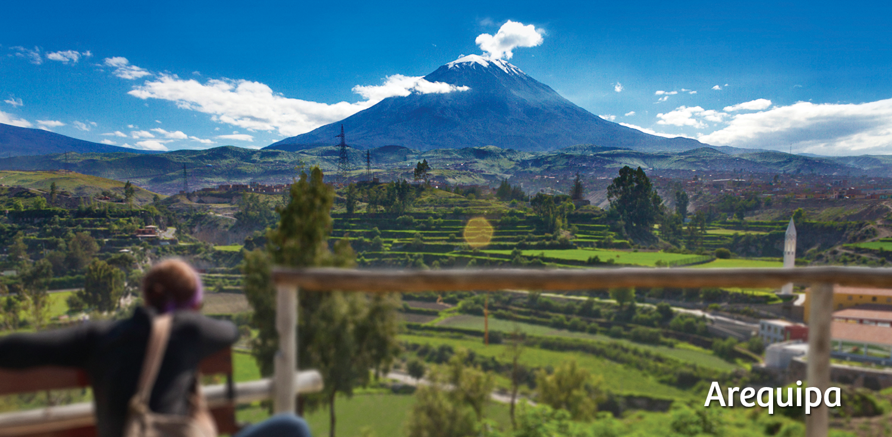
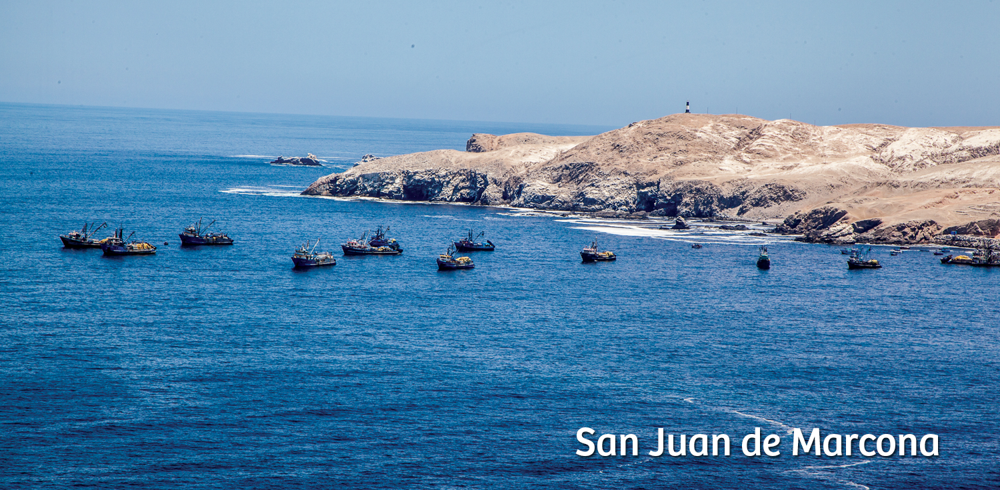
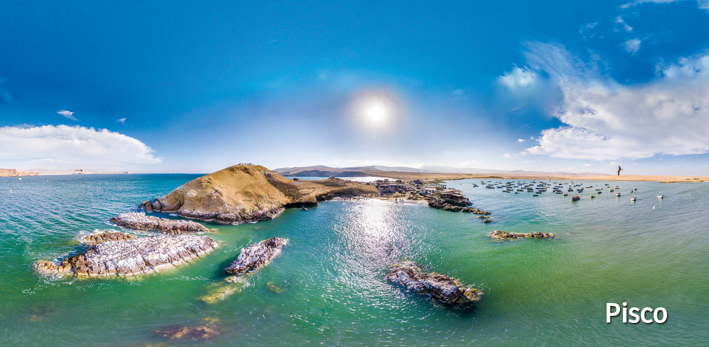
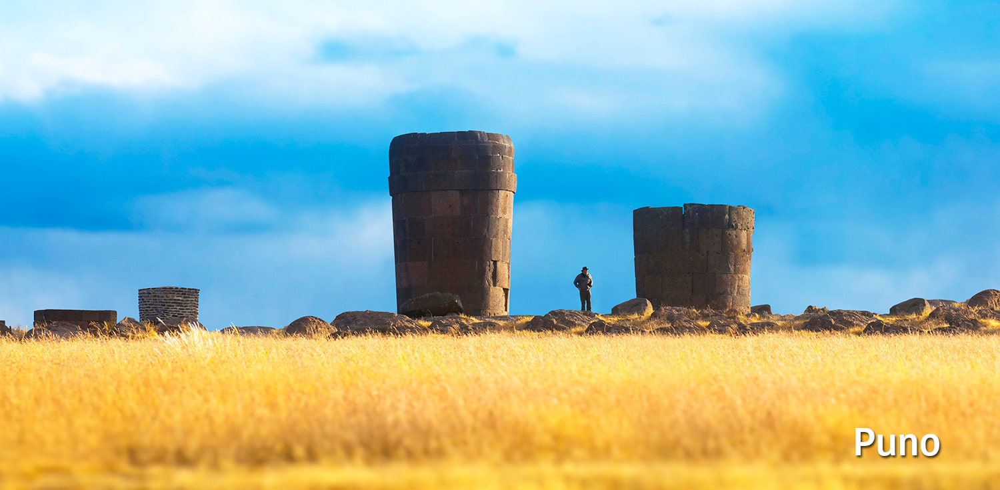

- 
- 
-

- 
- 

Con motivo del Rally Dakar 2018 que se realizara en el mes de enero, le ofrecemos una guía práctica para poder disfrutar de esta gran experiencia.
Con más de 10 mil años de historia, el Perú ostenta una gran riqueza cultural: cuenta con una deliciosa y laureada gastronomía, posee imponentes complejos arqueológicos, patrimonios mundiales de la Unesco y vastas reservas naturales. El Perú está ubicado en la parte occidental de América del Sur y está asentado sobre 1’285,215 km2 de terreno y 200 millas marinas del Océano Pacífico
La población del Perú supera los 31.5 millones de habitantes y se pueden identificar tres grandes regiones: Costa, Sierra y Selva, que le dan al país una enorme multiplicidad de paisajes. En esas regiones se encuentran 11 ecorregiones y 84 zonas de vida de las 117 que existen en el mundo. Debido a su diversa geografía, el Perú posee una gran variedad de recursos naturales.
Dakar
La 40º edición del Rally Dakar tendrá a Lima como lugar de partida. En el Perú se correrán seis etapas del 6 al 11 de enero de 2018. Las ciudades por donde pasará la carrera serán Lima, Pisco, San Juan de Marcona, Arequipa y Puno. La ruta peruana del Rally Dakar será sin duda muy exigente para los participantes debido a su variada geografía. Luego de cinco años la carrera más importante del off-road del mundo vuelve al Perú. El Gobierno Peruano se compromete una vez más a que esta carrera sea ambiental y culturalmente responsable para salvaguardar el patrimonio arqueológico y natural del Perú. El país espera a todos los visitantes con los brazos abiertos y espera que su estadía sea inolvidable.
Destinos
Lima
Recorrer las calles de Lima es admirar sus iglesias, sitios arqueológicos y casonas que conviven con modernos edificios. Lima también ofrece una gran variedad de espectáculos culturales y es reconocida en el mundo por ser la capital gastronómica de Latinoamérica. Lima tiene el privilegio de ser la única capital de Sudamérica ubicada a orillas del Océano Pacífico. Por eso, les ofrece a los turistas comenzar o terminar el día en caminatas o paseos en bicicleta por sus malecones.
Pisco
La ciudad de Pisco está ubicada a orillas del Océano Pacífico en la región de Ica, al sur de Lima. Pisco es muy conocido por el puerto, la agricultura y la industria vitivinícola. También es una ciudad conocida por ser el lugar originario de la bebida tradicional del Perú: el pisco. Sus dunas son un atractivo para la gente que practica deportes de aventura como el sandboarding y motocross.
San Juan de Marcona
Ciudad portuaria en la provincia de Nasca, región Ica. Se distingue por la minería, el comercio y la pesca artesanal. Aquí se puede visitar la Reserva de Punta San Juan que es refugio a una variedad de animales marítimos como los lobos marinos y los pingüinos de Humboldt. La Ensenada de San Fernando es el único lugar en la costa donde se pueden ver guanacos y cóndores andinos.
Arequipa
Conocida como la Ciudad Blanca por su arquitectura esculpida en sillar, Arequipa resplandece favorecida por un clima siempre soleado todo el año y un cielo azul que invita a caminar y admirar la belleza de sus monumentos, nevados, volcanes y profundos cañones. Además, se puede disfrutar de su exquisita gastronomía y una vida nocturna que te animarán a regresar más de una vez.
Puno
En Puno podrás ser parte de una atmósfera mágica donde las leyendas, las tradiciones y las fiestas llenas de color se respiran todos los días. Las islas de los Uros –comunidad asentada en sorprendentes islas flotantes fabricadas con esteras de totoras– son solo superadas por el místico Lago Titicaca. Un pueblo orgulloso de su pasado lleno de tradición y folclor que se desborda cada año en danzas y ritos que llega a su máxima expresión en la fiesta en honor a la Virgen de la Candelaria.
Anden de contenido
Andén de Contenidos es la nueva plataforma a través de la cual PROMPERÚ pone a disposición de sus colaboradores el material de trabajo. Este sistema es un medio a través del cual se pueden compartir fotos, videos, publicaciones y documentos de todo tipo. La nueva plataforma tiene poderosas herramientas de colaboración que permitirán un mejor trabajo en equipo. Andén de Contenidos está basado en la plataforma Elvis Dam, un motor de gestión de archivos multimedia que permite utilizar diversos criterios de búsqueda y organización de archivos de manera intuitiva y sencilla.
El uso del material de la institución se rige por el documento legal “Política para el uso de obras editoriales, gráficas, fotográficas y audiovisuales” aprobado por la resolución de Secretaria General Nª 113-2017- PROMPERÚ del 2 de Octubre del 2017.
RECOMENDACIONES TURÍSTICAS
Lima
- Central Restaurante - Calle Santa Isabel 376, Miraflores
- Maido - Calle San Martín 399, Miraflores
- Astrid & Gastón - Av. Paz Soldán 290, San Isidro
- Osso Carnicería y Salumeria - Av. Santo Toribio 173, San Isidro
- El Mercado - Av. Hipólito Unanue 203, Miraflores
- Centro Histórico de Lima - Cercado de Lima
- Circuito Mágico del Agua - Jirón Madre de Dios S/N, Cercado de Lima
- Huaca Pucllana - Calle General Borgoño 8, Miraflores
- MATE Museo Mario Testino - Av. Pedro de Osma, Barranco
- Museo de Arte de Lima (MALI) - Paseo Colón 125, Parque de la Exposición, Lima
- Museo Larco - Av. Simón Bolívar 1515, Pueblo Libre
Pisco
- La Negra y el Blanco - Marina Turística de Paracas, Paracas
- Wayra Restaurant Gourmet - Av. Paracas 23, Paracas
- Visita a la Reserva Nacional de Paracas
- Visita Islas Ballestas
San Juan de Marcona
- Restaurant Encuentros - Calle Las Turquesas 39, San Juan de Marcona
- City tour: Ica (buggie y sandboarding)
- Visita: Líneas de Nasca
Arequipa
- Chicha por Gastón Acurio: Santa Catalina 210 Cercado
- Sonccollay Resort: Portal de San Agustín
- Museo del Pisco: Calle Moral 229
- Monasterio de Santa Catalina
- Mirador de Yanahuara: Miguel Grau, Yanahuara

Puno
- Chicha por Gastón Acurio: Santa Catalina 210 Cercado
- Sonccollay Resort: Portal de San Agustín
- Museo del Pisco: Calle Moral 229
- Monasterio de Santa Catalina
- Mirador de Yanahuara: Miguel Grau, Yanahuara